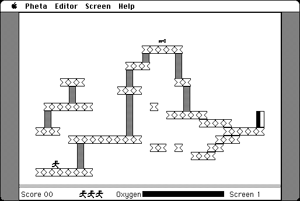

Download
spacestation_pheta_2.7.zip (184K) Space Station Pheta 2.7 repackaged into a zipped hfs disk image and checksum file. The disk image can be mounted with Mini vMac.
spacestation_pheta_2.7.hqx (283K) Space Station Pheta 2.7 in the original format.
copyright: T&T Software
mod date: Jul 6, 2004
license: shareware
official url :
T&T Software - Spacestation Pheta for Macintosh
"Fast, multi-screen, climbing game". For System 4.2 or later.

If you find these downloads useful, please consider helping the Gryphel Project, which hosts them.
Here are the md5 checksums for the downloads, signed with Gryphel Key 5:
--------- GRY SIGNED TEXT --------- 1bb46072e6c7100e953a78e451945f84 spacestation_pheta_2.7.zip a1a1d5bc893e1dbeddee6643b089c6ee spacestation_pheta_2.7.hqx ------- BEGIN GRY SIGNATURE ------- Gry/4Xa8CFcUzxdN/CF8HIQ1FDa9ks5c3omBaaFqjh9WPRVwvZUDUOwoT96/yIux MchPDm1DdKklMxbpp+j6bMLilAv+KhghmBW24CFKvU2rXbQ/8aR1YkmZ5XCL2itw o/SOhRtoUJAsYeU65idQuCSlcguEbnrQtlOq13c2Wr3fhwGcpMaKlJTVcq/KgY3j -------- END GRY SIGNATURE --------